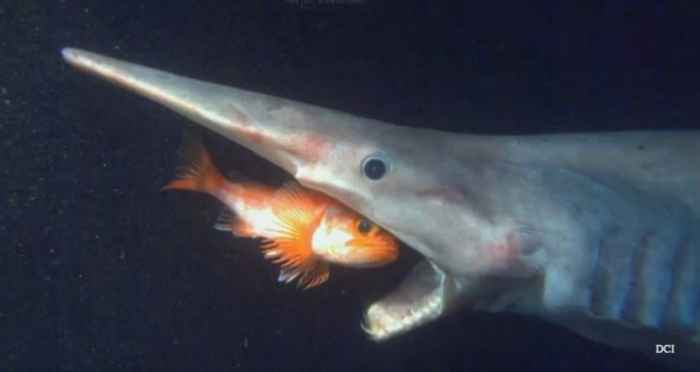

El océano profundo cubre 2 tercios de la extensión de la tierra, y puede conseguir niveles de bastante más de 3.5 kilómetros por abajo de el área del agua. En aquel hábitat, el más enorme existente de forma continua en el mundo
| Especie | Ubicación | Tamaño Promedio | Alimentación |
|---|---|---|---|
| Fondo de los océanos Atlántico y Antártico | 1 metro | Organismos heterótrofos que se alimentan principalmente de otros peces, por lo que son carnívoros depredadores. | |
| Atlántico norte | 38 cm de longitud | Se alimentan primordialmente de animales muertos, enfermos o atrapados en redes. | |
 |
Océano Atlántico, Océano Indico, Océano Pacifico, que comprende desde Japón hasta Australia. | 6 a 7 metros. | Calamares, cangrejos, crustáceos, pulpos y peces. |
| Costas de Australia, Nueva Zelanda y Tasmania. | 30 y 40 centímetros de longitud | Peces pequeños, moluscos y crustáceos que habiten en aguas profundas. | |
| Oceano Pacifico, Atlantico e Indico | capaces de crecer hasta 5,49 metros (18,0 pies) de longitud | Tiene un sistema de alimentación de filtrado muy parecido a los tiburones ballena va absorviendo lo que se cruza en su camino: todo tipo de crustaceos y peces pequeños. |